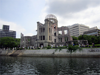
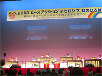
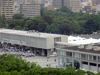
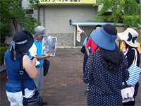
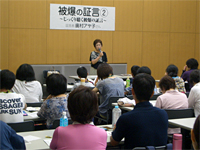
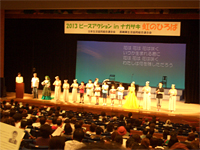
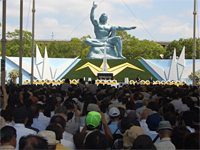

2013ピースアクションinヒロシマ・ナガサキが開催されました
8月4日から6日、「継承と創造～ヒロシマから平和な未来を築こう！」をテーマに、日本生協連のピースアクションinヒロシマが、7日からは「核兵器のない平和な世界を目指して、ナガサキの想いを未来に！」と題し、ピースアクションinナガサキが9日まで開催されました。
核兵器も戦争もない平和な世界を願い、さいたまの生協からは、広島に3生協と県生協連10名、長崎には3生協と県生協連59名の生協組合員・役職員が訪れ、核廃絶を求める被爆地の思いを共有しました。
ピースアクションinヒロシマ(8月4日～6日)
「朗読と被爆者の証言」「碑めぐり・平和記念講演内」「川から見る被爆の実相」（4日）
|  |
| 川から見る被爆の実相 （４日・旧広島県産業奨励館付近） |
被爆者の江種さんと植野さん、ボランティアの恵美さんからそれぞれ証言や説明を受けました。「平和記念公園の下や川底には未だに多くの遺骨が眠っていること」「宗派を超えた仏教・神教・キリスト教の合同慰霊行事」「いわゆる爆心ゼロメートル地帯で唯一人生存したレストハウスの野村英三さんの話」「水を求めて原爆ドームに沿った元安川などで亡くなった多くの方の状況」「2万人余りが犠牲になったといわれる韓国人原爆犠牲者慰霊碑」「約7万柱が納められている広島原爆死没諸霊位供養塔」など、体験を通したお話しを伺うことができ、原爆の非人道性について改めて認識させられました。
「ヒロシマ虹のひろば」～広島県立総合体育館 (5日・52生協、1,100人参加)
|  |
| 「虹のひろば」の模様（5日・広島県立体育館グリーンアリーナ） |
広島ジュニアマリンバアンサンブルの演奏でステージが始まりました。メインの企画として広島平和文化センター前理事長のスティーブン・リーパーさんの講演がありました。「核兵器の非人道性に焦点を当てて禁止につなげよう、と言う動きが起きている。対人地雷やクラスター爆弾も禁止条約ができている。禁止条約は世界の常識を作っていく。現在、80カ国が賛同した共同声明に日本が推進する立場で臨むように働きかけていくのが私たちの役割である」旨の報告がありました。後半は「書道でピースメッセージコーナー」や「展示コーナー」などで交流を深めました。
「被爆68周年 広島市原爆死没者慰霊並びに平和祈念式」（6日）
|  |
| 原爆死没者慰霊式・平和祈念式がおこなわれた平和記念公園（6日） |
式典は市長と遺族代表による「原爆死没者名簿奉納」から始まりました。松井一實広島市長の「平和宣言」での「ヒロシマは、日本国憲法が揚げる崇高な平和主義を体現する地であると同時に、人類の進むべき道を示す地でもあります。」「世界の為政者の皆さん、いつまで、疑心暗鬼に陥っているのですか。威嚇によって国の安全を守り続けることができると思っているのですか。広島を訪れ、被爆者の思いに接し、過去にとらわれず人類の未来を見据えて信頼と対話に基づく安全保障体制への転換を決断すべきではないですか。」との呼びかけに心を打たれました。
ピースアクションinナガサキ（8月7日～9日）
「原爆落下中心地を訪ねて」（7日）
|  |
| 生協平和のまち歩きにて・7日長崎市内 |
爆心地である平和公園周辺の主要な遺構・慰霊碑を見学しました。はじめに、原爆投下前後の写真を前に、米国は投下前に状況を確認していること、投下後は鉄筋の建物だけが残り生活がなくなったこと、原爆の無惨さを｢昼が夜に、人間がお化けに｣なったとの小学生の作文に68年前の惨状を想像しながら、長崎刑務所浦上刑務支所跡、平和祈念像・モニュメント、原爆投下中心碑など散策しました。原爆資料館では、投下までの経過や原爆による熱線・爆風・放射線被害の説明を伺いました。（生協平和のまち歩き）
平和の原点は、人の痛みがわかる心（8日・被爆の証言）
|  |
| 旧新興善小学校跡の長崎市立図書館でおこなわれました |
8日は、長崎市立図書館で「じっくり聴く被爆の証言」がありました。
証言された奥村アヤコさんは、はじめに長崎の被爆遺構4か所が国の重要として登録されたことを紹介しました。｢当時8歳で爆心地に近い城山町で被爆、一瞬にして私を一人にしてみんな消えてしまいました。46年間原爆の話はできませんでしたが、ある本の中に私の体験記を書いたのが切っ掛けとなり被爆体験を伝えています。戦後、一人ぼっちで地獄のような日々を送りましたが、隣近所の方に助けられました。平和の原点は人の痛みがわかる心を持つこと、みんなが仲良くしていければ戦争はありません。平和をつくり守り伝える人になってください。長崎を最後の被爆地にと願っています｡人間は一人では生きていけません、命を大切にして下さい。｣と証言されました。
「ナガサキ虹のひろば」～長崎市民会館文化ホール(8日・35生協、620人参加)
|  |
| 「ナガサキ虹のひろば」の模様 （8日長崎市民会館文化ホール） |
長崎高等学校龍踊部による勇壮華麗な龍踊り｢レッドドラゴン｣のオープニングから始まりました。日本生協連の和田寿昭専務理事は｢原爆の悲劇を繰り返さないために平和と核兵器廃絶の取り組みを進め、地域から次の世代に継承する取り組みが進められています｡先日、朝日新聞に｢パウエル元国務長官が核兵器は軍事的には無用の存在」とのインタビュー記事があり、これまでの原爆の悲劇を伝える生協の活動が無駄ではなかったことを確信しました。全国の生協組合員の核兵器廃絶向けた取り組みへ敬意を表します。2015年NPT再検討会議に向けてできることを考え行動につなげましょう。また、被爆者のみなさんの思いを一緒に世界に向けて発信していきたい。｣と主催者挨拶。続いて黙祷をおこない、田上富久長崎市長からの挨拶「核兵器の非人道性に関するオスロ会議に出席して」と題して核兵器廃絶地球市民長崎集会実行委員長の朝長万左男さんの講演、劇団TABIHAKU＆ピースチャイルドながさきによる音楽とおはなし「光と風とくすの木の詩」の上演、フィナーレは「花は咲く」を合唱しました。
「長崎原爆犠牲者慰霊平和祈念式典」（9日）
|  |
| 長崎原爆犠牲者慰霊平和祈念式典 （9日・松山町平和公園） |
9日、松山町平和公園の平和祈念像前で行われた、長崎原爆犠牲者慰霊平和祈念式典で長崎市の田上富久市長は、｢今年4月ジュネーブで開催された核不拡散条約(NPT)再検討会議準備委員会で提出された核兵器の非人道性を訴える共同声明に日本政府は賛同の署名をせず、世界の期待を裏切ったことは被爆国としての原点に反すること、インドとの原子力協定交渉の再開はNPTを形骸化することになり朝鮮半島の非核化の妨げになることを指摘し、日本政府に被爆国としての原点に返ることを求めます。今後とも広島市と協力して核兵器のない世界の実現に努力し続けること｣の平和宣言をしました。